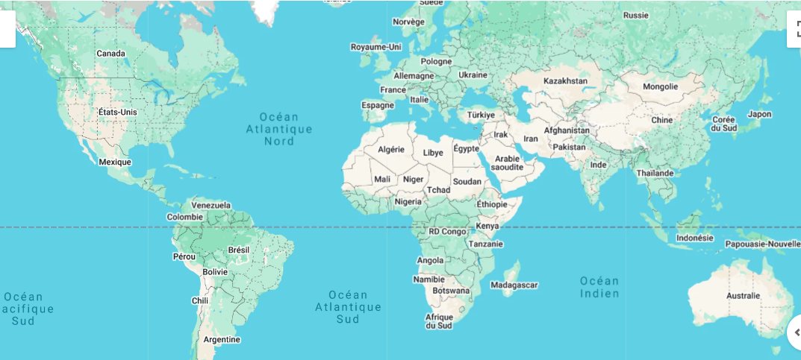

Europe francophone
En France, Belgique, Suisse et dans d’autres pays d’Europe, la disponibilité Starlink dépend du pays et parfois de la file d’attente. Vérifiez la disponibilité sur Starlink.com (carte) avant commande.

Langue et support
Vous pouvez changer la langue dans l’application Starlink (réglages du compte / de l’app) et sur le site officiel une fois connecté — le français est proposé, ainsi que d’autres langues selon les mises à jour Starlink. Si une section reste en anglais, basculez la langue dans l’app ou alignez la langue de votre téléphone.
Ce guide complète le support officiel en regroupant des explications en français pour le Canada et l’Europe francophone ; pour la facturation ou un incident technique, utilisez toujours support.starlink.com.
Installation en zone rurale
- Maisons de campagne, vignobles, montagne : même logique de ciel dégagé qu’au Canada.
- Règles locales d’urbanisme (fixation sur toit, antennes) : renseignez-vous en mairie ou chez un installateur.
- UE : respect des normes électriques et du matériel homologué pour votre pays.
Voyage entre pays
Les règles de mobilité (utiliser le kit dans un autre pays) changent selon l’abonnement. Ne supposez pas qu’un forfait français fonctionne partout en Europe sans vérifier les conditions actuelles.
Prix selon le pays d’installation
Avantage signalé par Starlink au support : lors d’une commande, même si vous passez par un autre pays ou une autre langue de site, les tarifs sont en principe recalculés automatiquement selon le lieu d’installation que vous indiquez (adresse de service), pas seulement selon le pays depuis lequel vous cliquez. Vérifiez toujours le montant affiché au checkout et sur votre facture avant de valider.
Les offres et taxes évoluent ; cette page ne remplace pas le devis officiel au moment de la commande.
Pour avoir plus de détails sur les forfaits, cliquez sur Starlink.com.